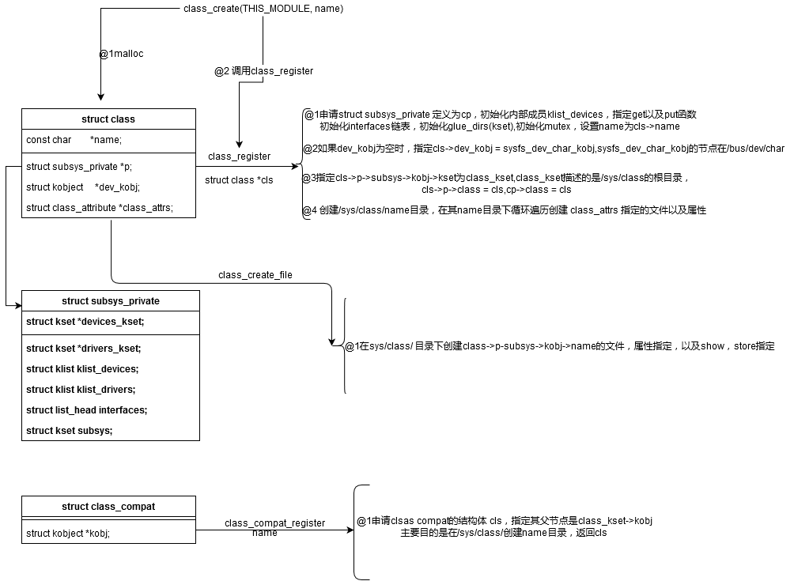

相关的文件：
linux-3.16.82\linux-3.16.82\drivers\base\class.c linux-3.16.82\linux-3.16.82\include\linux\device.h
初始化：
int __init classes_init(void)
{- /*初始化一个class_kset,目的是在sys/目录下创建class的文件夹
class_kset = kset_create_and_add("class", NULL, NULL);
if (!class_kset)
return -ENOMEM;
return 0;
}
相关的结构体
/**
* struct class - device classes
* @name: Name of the class.
* @owner: The module owner.
* @class_attrs: Default attributes of this class.
* @dev_groups: Default attributes of the devices that belong to the class.
* @dev_kobj: The kobject that represents this class and links it into the hierarchy.
* @dev_uevent: Called when a device is added, removed from this class, or a
* few other things that generate uevents to add the environment
* variables.
* @devnode: Callback to provide the devtmpfs.
* @class_release: Called to release this class.
* @dev_release: Called to release the device.
* @suspend: Used to put the device to sleep mode, usually to a low power
* state.
* @resume: Used to bring the device from the sleep mode.
* @ns_type: Callbacks so sysfs can detemine namespaces.
* @namespace: Namespace of the device belongs to this class.
* @pm: The default device power management operations of this class.
* @p: The private data of the driver core, no one other than the
* driver core can touch this.
*
* A class is a higher-level view of a device that abstracts out low-level
* implementation details. Drivers may see a SCSI disk or an ATA disk, but,
* at the class level, they are all simply disks. Classes allow user space
* to work with devices based on what they do, rather than how they are
* connected or how they work.
*/
struct class {
const char *name;
struct module *owner;
struct class_attribute *class_attrs;
const struct attribute_group **dev_groups;
struct kobject *dev_kobj;
int (*dev_uevent)(struct device *dev, struct kobj_uevent_env *env);
char *(*devnode)(struct device *dev, umode_t *mode);
void (*class_release)(struct class *class);
void (*dev_release)(struct device *dev);
int (*suspend)(struct device *dev, pm_message_t state);
int (*resume)(struct device *dev);
const struct kobj_ns_type_operations *ns_type;
const void *(*namespace)(struct device *dev);
const struct dev_pm_ops *pm;
struct subsys_private *p;
};
struct class_attribute {
struct attribute attr;
ssize_t (*show)(struct class *class, struct class_attribute *attr,
char *buf);
ssize_t (*store)(struct class *class, struct class_attribute *attr,
const char *buf, size_t count);
};
struct class_interface {
struct list_head node;
struct class *class;
int (*add_dev) (struct device *, struct class_interface *);
void (*remove_dev) (struct device *, struct class_interface *);
};
struct class_compat {
struct kobject *kobj;
};
相关的API
#define class_create(owner, name) 类似于class_register,
int __class_register(struct class *cls, struct lock_class_key *key)
void class_unregister(struct class *cls)
class_register(class)
struct class_compat *class_compat_register(const char *name);
void class_compat_unregister(struct class_compat *cls);
int class_compat_create_link(struct class_compat *cls, struct device *dev,
struct device *device_link);
void class_compat_remove_link(struct class_compat *cls, struct device *dev,
struct device *device_link);
extern int __must_check class_interface_register(struct class_interface *);
extern void class_interface_unregister(struct class_interface *);
extern struct class * __must_check __class_create(struct module *owner,
const char *name,
struct lock_class_key *key);
static inline int __must_check class_create_file(struct class *class,
const struct class_attribute *attr)
